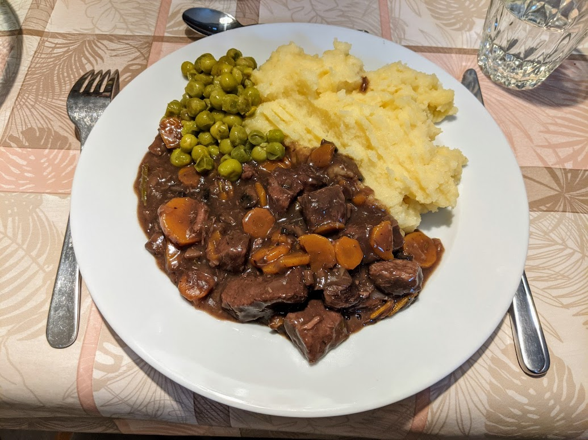

Bœuf bourguignon

Pour 6 personnes :
- 800g de bœuf à mijoter (type macreuse)
- Une bouteille de vin rouge (voire une bouteille et demie)
- Deux oignons
- Quatre gousses d'ail
- Quatre cuillères à soupe de farine
- Un bouquet garni
- 300g de champignons de Paris
- Quatre ou cinq carottes
- Beurre, huile d'olive, sel, poivre
- Mettre du beurre et de l'huile d'olive dans une cocotte, faire chauffer et y faire roussir la viande.
- Ajouter les oignons coupés en petits morceaux, l'ail coupé en tranches fines, les champignons lavés et coupés en gros bouts, saupoudrer de farine, mélanger et laisser un peu dorer.
- Gratter le fond, et mouiller avec le vin rouge (il faut que ça recouvre la viande). Saler, poivrer, ajouter les carottes coupées en fines rondelles, l'ail écrasé et le bouquet garni.
- Porter à ébullition, puis laisser mijoter à feu doux pendant deux bonnes heures (minimum, mais en fait tu peux faire cuire un peu autant que tu veux).
- Servir chaud avec de la purée de pommes de terre ou des pâtes (et éventuellement des légumes verts, genre brocolis ou petits pois).
Retour à la liste des recettes